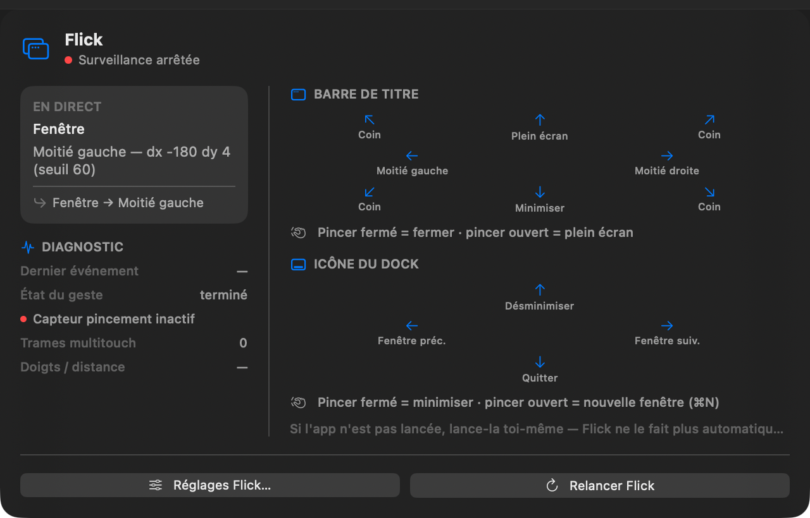
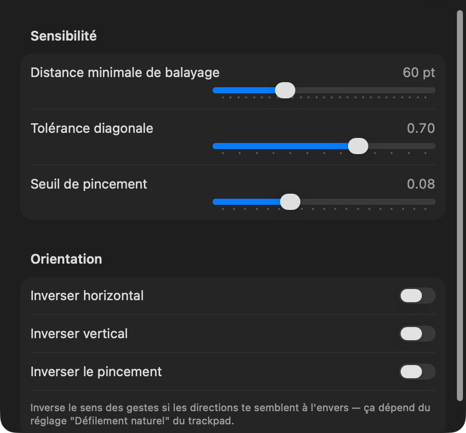
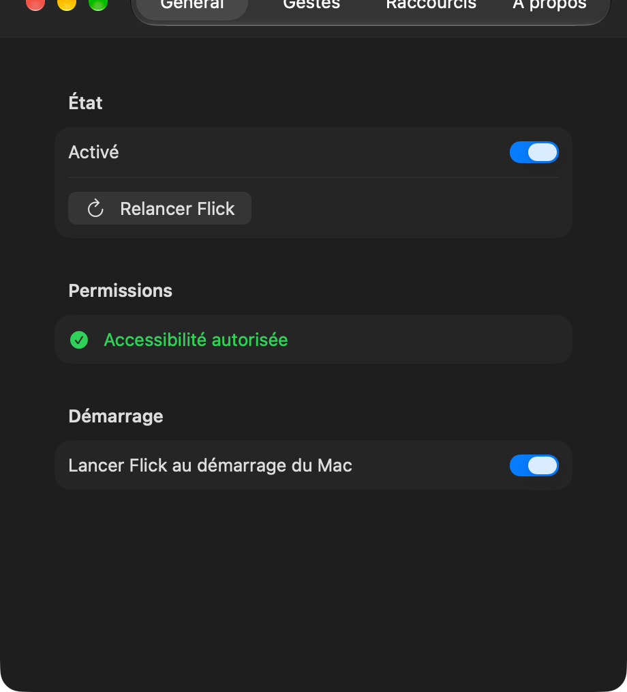
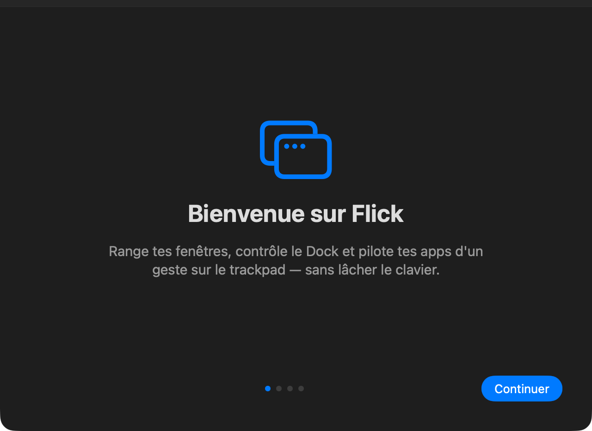

Flick range tes fenêtres, contrôle ton Dock et pilote tes apps d'un geste sur le trackpad — sans lâcher le clavier, sans toucher la souris.
Balaie depuis la barre de titre d'une fenêtre pour la ranger en un instant — moitié d'écran, quart d'écran, plein écran. Depuis une icône du Dock, change de fenêtre, minimise ou quitte une app sans jamais cliquer. Un panneau discret te montre en temps réel où va ta fenêtre.

Ajuste la sensibilité du balayage, le seuil du pincement et la tolérance diagonale — pas besoin d'un geste parfaitement droit pour que Flick comprenne ce que tu veux faire. Inverse les axes si les directions te semblent à l'envers.

Lance Flick automatiquement à chaque démarrage du Mac. Les mises à jour arrivent seules — signées et vérifiées, jamais de réinstallation manuelle.

Une courte présentation au premier lancement montre l'essentiel — la carte des gestes, le démarrage automatique, et l'autorisation nécessaire pour que tout fonctionne.
